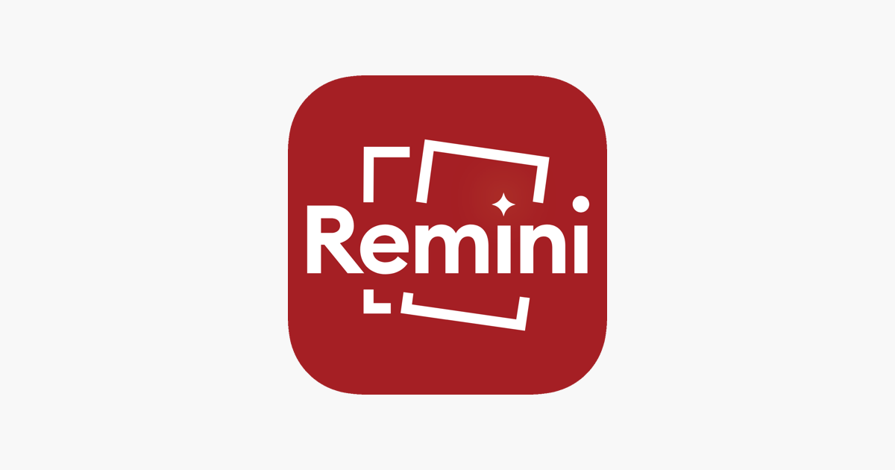

Let’s be honest. We’ve all been there—scrolling through the good ol’ phone gallery, expecting to find crisp, sharp memories, only to realize that some photos look like they’ve been taken with a potato. It’s frustrating, right? But what if I told you there’s an app that can save your precious but blurry memories? Enter Remini Pro APK, a photo enhancer that’s more magical than your phone’s built-in sharpening filter.
In this article, we're diving deep into what Remini Pro APK is, how it works, and why it could be your new favorite app. Oh, and don’t worry—I’ll keep it light and straightforward. We’ll sprinkle in some humor so you don’t feel like you’re stuck in a tech manual!
For those unfamiliar, Remini is an app that breathes new life into blurry, low-quality photos by using AI-powered technology to enhance them. But wait, before you start thinking “Oh no, another AI tool”—this one is actually impressive. Unlike the run-of-the-mill photo editing apps, Remini takes photo enhancement to a new level, especially when you use the Pro version.
Remini Pro APK is essentially the premium version of the app, giving you access to a bunch of advanced features that the free version doesn’t offer. And yes, you can download the APK (Android Package) version of it outside of the Google Play Store if you’re looking for some extra features without subscribing to the app’s premium service.
Okay, so you’re probably wondering what’s so different about Remini Pro APK compared to the regular version. Well, here’s a little sneak peek into the key features that make the Pro version stand out:
Remini Pro APK uses artificial intelligence to analyze the pixels of a low-resolution or blurry photo. It then compares these pixels to millions of reference images and reconstructs the photo to give you a clearer, sharper result. Think of it as a high-tech version of those “enhance” buttons in crime dramas—except this one actually works.
Pro Tip: Remini Pro APK is especially useful for old photos, low-light shots, blurry selfies, and even pixelated social media images.
The million-dollar question—is it safe? Downloading APK files from third-party sources can be risky because they might contain malware or viruses. However, if you’re careful about where you download it from, Remini Pro APK is generally safe to use. Just make sure you’ve got a good antivirus app on your phone, just in case. Better safe than sorry, right?
Installing an APK file is a bit different from installing an app directly from the Google Play Store, but don’t worry—it’s not rocket science. Here’s a quick guide on how to do it:
Most apps are great for adding filters, adjusting brightness, and maybe touching up some minor blemishes. But Remini Pro goes beyond that. It’s designed to turn your blurry, pixelated photos into something worthy of a spot on your wall or Instagram feed. It’s like the difference between putting makeup on and getting a full-blown makeover.
If you’re tired of scrolling through your gallery and feeling bummed out about all those blurry, low-quality pics, then Remini Pro APK is definitely worth checking out. With its powerful AI-based enhancement tools, you can bring old, blurry photos back to life with just a few taps.
Your blurry memories deserve a second chance, and with Remini Pro, they’ll look better than ever!